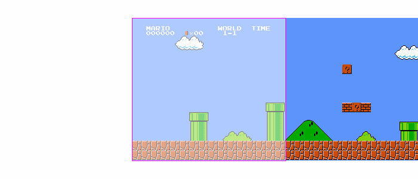
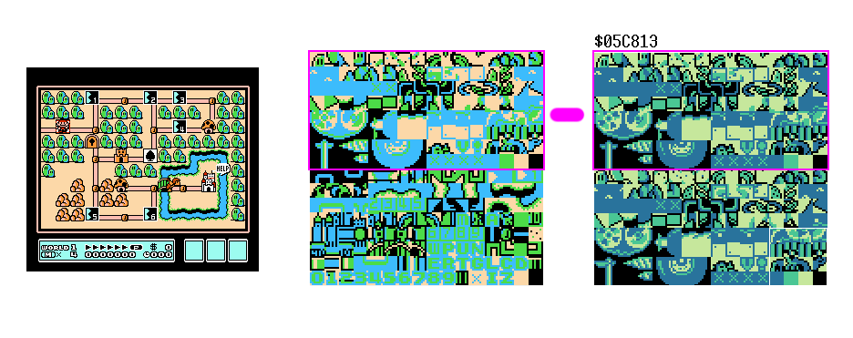
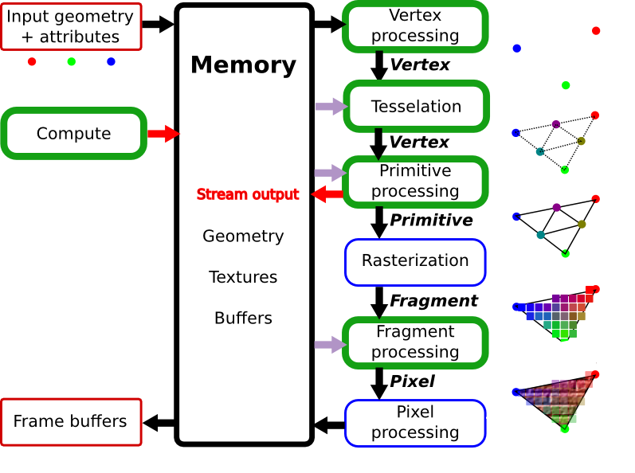

提醒
Lab3 (perftune) 已布置
- soft deadline: 12.13
本讲概述
对所有学计算机的同学来说，“设备” 才是真正触摸到的，但设备到底是什么？
按下键盘之后，计算机硬件/软件系统到底发生了什么？
本讲内容
- 处理器-设备接口
- I/O 设备选讲
处理器-设备接口
回顾：为什么会有 I/O 设备？
1950s: 随着计算机运算速度和存储器的发展，计算机已经快到可以 “计算” 人类日常任务了。
计算机 “Turing Machine” 中的一切都是数据
- 因此计算机一定会提供一个机制
- 从设备中读取数据 (input data)
- 键盘按键的代码、鼠标移动的偏移量、……
- 向设备写入数据 (output data)
- 输出到打印机的字符串、屏幕上显示的像素……
- 设备可以向处理器发送中断 (后话)
- 从设备中读取数据 (input data)
设备-处理器接口 (cont'd)
CPU 可以直接通过指令读写这些寄存器
- Port-mapped I/O (PMIO)
- I/O 地址空间 (port)
- CPU 直连 I/O 总线
- Memory-mapped I/O (MMIO)
- 直观，使用普通内存读写指令就能访问
- 带来一些设计和实现的麻烦：编译器优化、缓存、乱序执行……
处理器眼中的 I/O 设备：x86-qemu UART
“COM1”; putch() 的实现
#define COM1 0x3f8
static int uart_init() {
outb(COM1 + 2, 0); // 控制器相关细节
outb(COM1 + 3, 0x80);
outb(COM1 + 0, 115200 / 9600);
...
}
static void uart_tx(AM_UART_TX_T *send) {
outb(COM1, send->data);
}
static void uart_rx(AM_UART_RX_T *recv) {
recv->data = (inb(COM1 + 5) & 0x1) ? inb(COM1) : -1;
}
更复杂的设备：打印机与 PostScript
打印机：将字节流描述的文字/图形打印到纸张上
- 可简单 (ASCII 文本序列，像打字机一样打印）
- 可复杂 (编程语言描述的图形)
- 高清全页图片的传输是很大的挑战
- 尤其是在 1980s
例子：PostScript (1984)
- 一种描述页面布局的 domain-specific language
- 类似于汇编语言
- 可以在命令行中创建高质量的文稿
- PDF 是它的 superset
- 例子：page.ps
两个特殊的 I/O 设备
总线
- 系统里可能有很多 (甚至是可变的) I/O 设备
- 总线实现了设备的查找、映射、和命令/数据的转发
- CPU 可以只直接连接到总线
- 总线可以连接其他总线
- 例子：
lspci -t,lsusb -t
中断控制器
- 管理多个产生中断的设备
- 汇总成一个中断信号给 CPU
- 支持中断的屏蔽、优先级管理等

小结
I/O 设备：“小计算机”
- 完成和物理世界的交互功能
- 连接到总线/中断控制器
- CPU 通过 PIO/MMIO 访问
今天很多 I/O 设备都带有或简单或复杂的 CPU
- 带跑马灯/编程功能的键盘和鼠标
- 显示加速器和 “显卡计算”
- ……
2D 图形绘制硬件
理论：一切皆可 “计算”
for (int i = 1; i <= H; i++) {
for (int j = 1; j <= W; j++)
putchar(j <= i ? '*' : ' ');
putchar('\n');
}
难办的是性能
- NES: 6502 @ 1.79Mhz; IPC = 0.43
- 屏幕共有 256 x 240 = 61K 像素 (256 色)
- 60FPS → 每一帧必须在 ~10K 条指令内完成
- 如何在有限的 CPU 运算力下实现 60Hz？
RP2C02 Picture Processing Unit (PPU)

76543210
||||||||
||||||++- Palette
|||+++--- Unimplemented
||+------ Priority
|+------- Flip horizontally
+-------- Flip vertically
CPU 只
- 类似于 PostScript 脚本
- 背景是 “大图” 的一部分
- 每行的前景块不超过 8 个
- PPU 完成图形的绘制
PPU: 只执行一个程序的 CPU
for (int x = 0, pos = 0; x < HEIGHT; x++) { // 行扫描
for (int y = 0; y < WIDTH; y++, pos++) {
vbuf[pos] = draw(x, y); // 算出 (x,y) 的贴块 (和颜色)
}
}
| 地址空间 | 大小 | 功能 |
|---|---|---|
$0000-$1FFF |
8 KB | Pattern tables |
$2000-$2FFF |
4 KB | Nametables |
$3000-$3EFF |
3.75KB | Mirrors of $2000-$2EFF |
$3F00-$3F1F |
32B | Palette RAM indexes |
$3F20-$3FFF |
224B | Mirrors of $3F00-$3F1F |
| OAM (DMA 访问) | Sprite Y, #, attribute, X |

{kind=link}
背景：“卷轴” 操作

在受限的硬件下做游戏：背景动画
通过切换 tile pattern table 实现背景动画
- 同时更新屏幕上的所有 tiles
- 难怪为什么有些 “次世代” 的游戏画面那么精良
- 更大的存储
- 专有的硬件 (图形甚至整个计算系统)
- 例子：GUN-NAC (1990)

3D 图形绘制硬件
更好的 2D 游戏引擎
如果我们有更多的晶体管？
- NES PPU 的本质是和坐标轴平行的 “贴块块”
- 实现上只需要加法和位运算
- 更强大的计算能力 = 更复杂的图形绘制
2D 图形加速硬件：图片的 “裁剪” + “拼贴”
- 支持旋转、材质映射 (缩放)、后处理、……
实现 3D
- 三维空间中的多边形，在视平面上也是多边形
- 任何 $n$ 边形都可以分解成 $n-2$ 个三角形
以假乱真的剪贴 3D
GameBoy Advance
- 4 层背景; 128 个剪贴 objects; 32 个 affine objects
- CPU 给出描述；GPU 绘制 (执行 “一个程序” 的 CPU)

但我们还是需要真正的 3D
三维空间中的三角形需要正确渲染

我们不要纸片人
- 我们要真正的 3D
- 要数百万个多边形构造的精细场景
现代 3D 图形
CPU 负责描述，GPU 负责渲染
- GPU 收到代码 + 数据 → 运算 → 写回结果到内存 → 发送中断
- GPU 中有数千个运算单元实现并行的计算

现代 3D 图形：硬件上的实现
__global__
void hello(char *a, char *b) {
a[threadIdx.x] += b[threadIdx.x];
}
char a[N] = "Hello ";
char b[N] = {15, 10, 6, 0, -11, 1};
cudaMalloc( (void**)&ad, N );
cudaMalloc( (void**)&bd, N );
cudaMemcpy( ad, a, N, cudaMemcpyHostToDevice );
cudaMemcpy( bd, b, N, cudaMemcpyHostToDevice );
printf("%s", a); // Hello
dim3 dimBlock( blocksize, 1 );
dim3 dimGrid( 1, 1 );
hello<<<dimGrid, dimBlock>>>(ad, bd); // run on GPU
cudaMemcpy( a, ad, N, cudaMemcpyDeviceToHost );
printf("%s\n", a); // World!
...
题外话：如此丰富的图形是怎么来的？

答案：全靠 PS (后处理)
例子：GLSL (Shading Language)
- 使 “shader program” 可以在 GPU 上执行
- 可以作用在各个渲染级别上：vertex, fragment, pixel shader
- 相当于一个 “PS” 程序，算出每个部分的光照变化
- 全局光照、反射、阴影、环境光遮罩……

总结
I/O 设备
任何能与 CPU 交换数据的 “东西”。
完成与物理世界的交互
- 键盘、鼠标、打印机……
效率更高的专用处理器
- GPU, NPU, FPGA, ...
End.
(今天应该解开了很多同学对计算机专业的疑惑？)